Show the code
library(tidyverse)
library(BayesERtools)
library(here)
theme_set(theme_bw(base_size = 12))This page demonstrates the options available in plot_er_gof() and how to customize ER plots beyond the built-in options.
See also the function reference for complete documentation.
library(tidyverse)
library(BayesERtools)
library(here)
theme_set(theme_bw(base_size = 12))data(d_sim_binom_cov)
d_sim_binom_cov_2 <-
d_sim_binom_cov |>
mutate(
AUCss_1000 = AUCss / 1000,
Dose = glue::glue("{Dose_mg} mg")
)
df_er_ae_hgly2 <- d_sim_binom_cov_2 |> filter(AETYPE == "hgly2")set.seed(1234)
ermod_bin <- dev_ermod_bin(
data = df_er_ae_hgly2,
var_resp = "AEFLAG",
var_exposure = "AUCss_1000"
)plot_er_gof() optionsplot_er_gof(ermod_bin)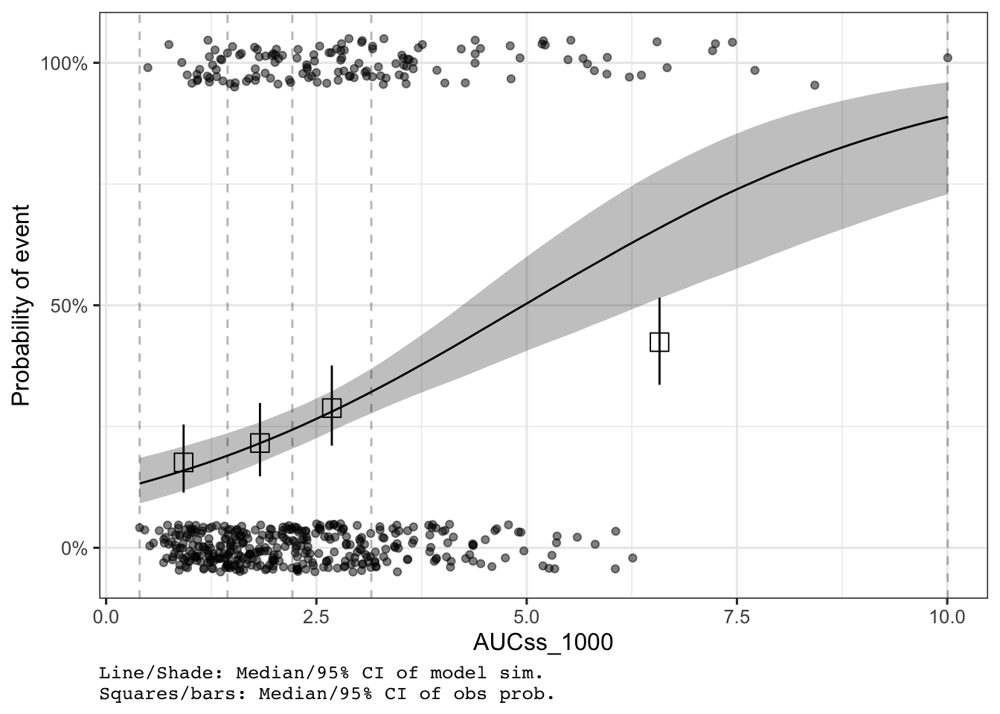
var_group)Color data points and add boxplot by dose group:
plot_er_gof(ermod_bin, var_group = "Dose")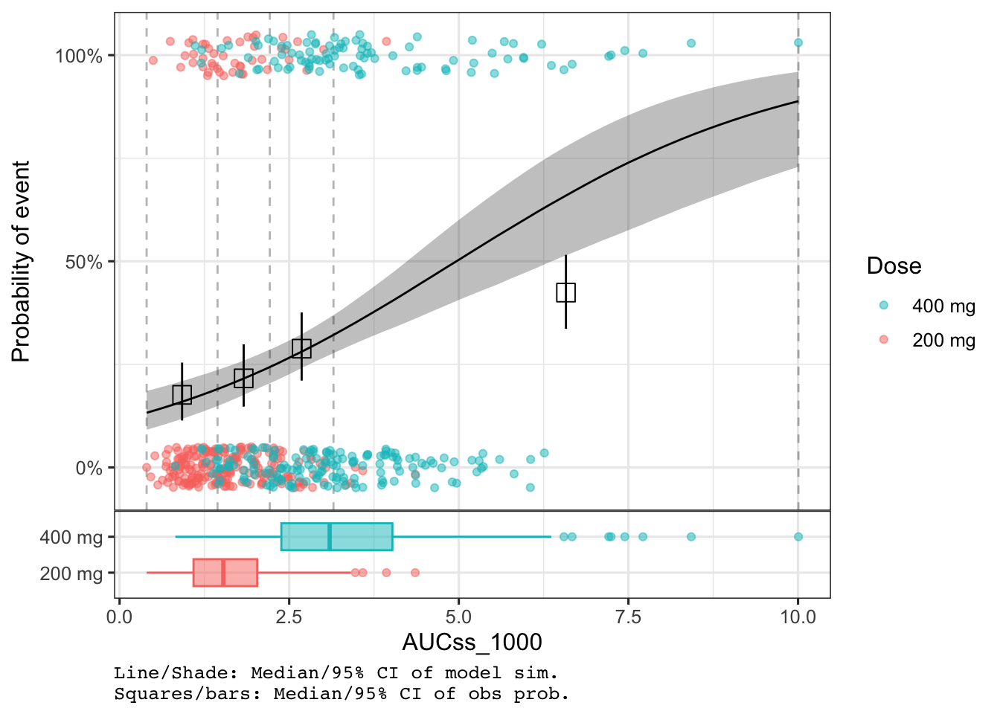
show_coef_exp)Display the credible interval for the exposure coefficient:
plot_er_gof(ermod_bin, var_group = "Dose", show_coef_exp = TRUE)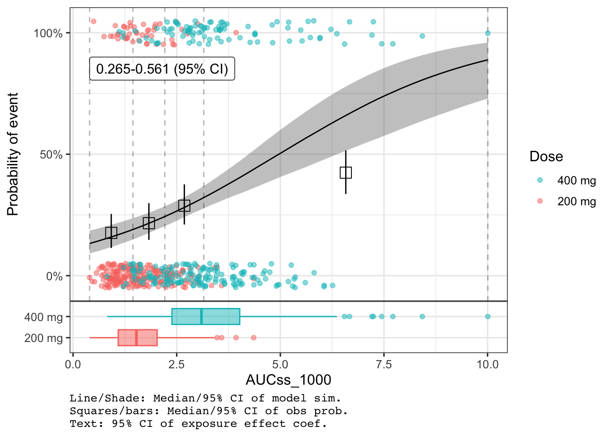
Customize the position and size of the coefficient label:
plot_er_gof(
ermod_bin,
var_group = "Dose",
show_coef_exp = TRUE,
coef_pos_x = 2, coef_pos_y = 0.2, coef_size = 3
)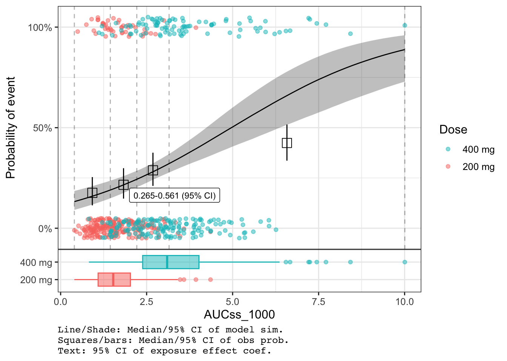
n_bins)Change the number of bins used to summarize observed event rates:
plot_er_gof(ermod_bin, var_group = "Dose", n_bins = 6)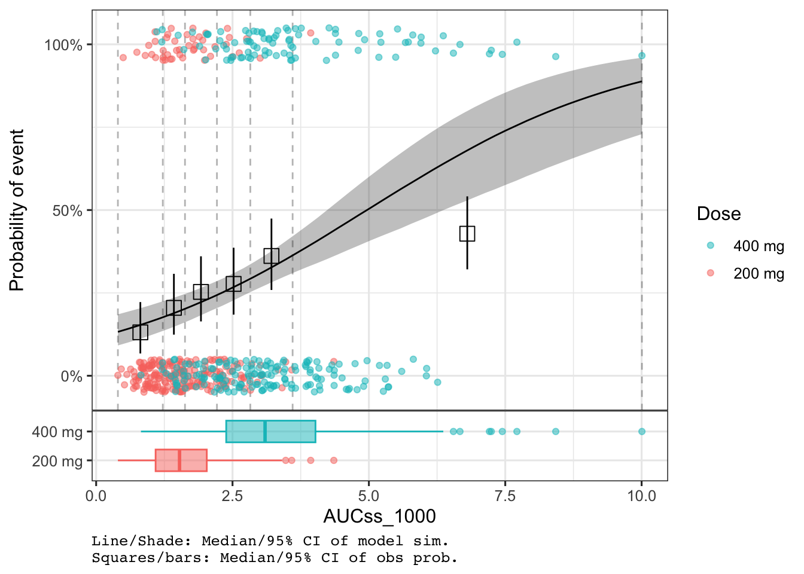
Control CI widths for observed data summary (qi_width_obs), simulated curve (qi_width_sim), and coefficient (qi_width_coef):
plot_er_gof(
ermod_bin,
var_group = "Dose",
show_coef_exp = TRUE,
qi_width_obs = 0.9,
qi_width_sim = 0.9,
qi_width_coef = 0.9
)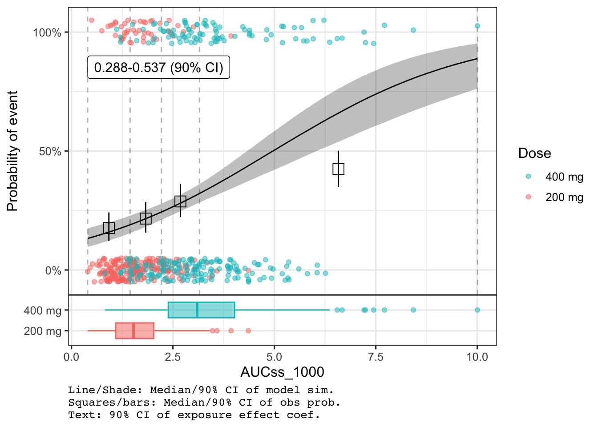
Control boxplot visibility and appearance:
# Explicitly add boxplot without var_group
plot_er_gof(ermod_bin, add_boxplot = TRUE)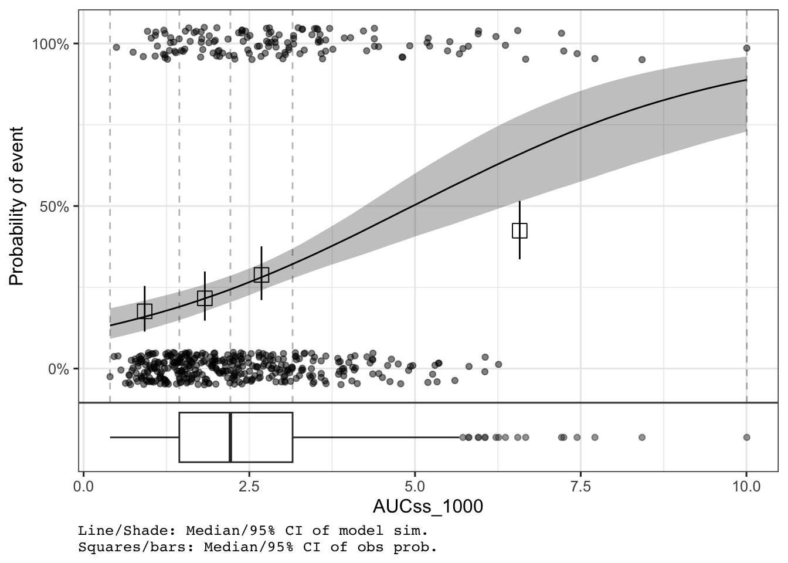
Adjust boxplot height and show y-axis title:
plot_er_gof(
ermod_bin,
var_group = "Dose",
boxplot_height = 0.25,
show_boxplot_y_title = TRUE
)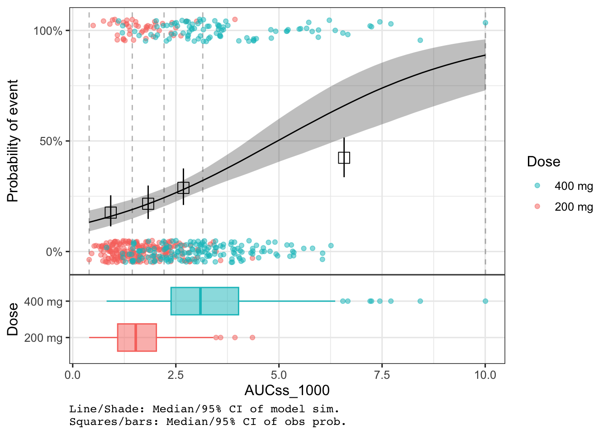
show_caption)The caption is shown by default. Hide it with show_caption = FALSE:
plot_er_gof(ermod_bin, var_group = "Dose", show_caption = FALSE)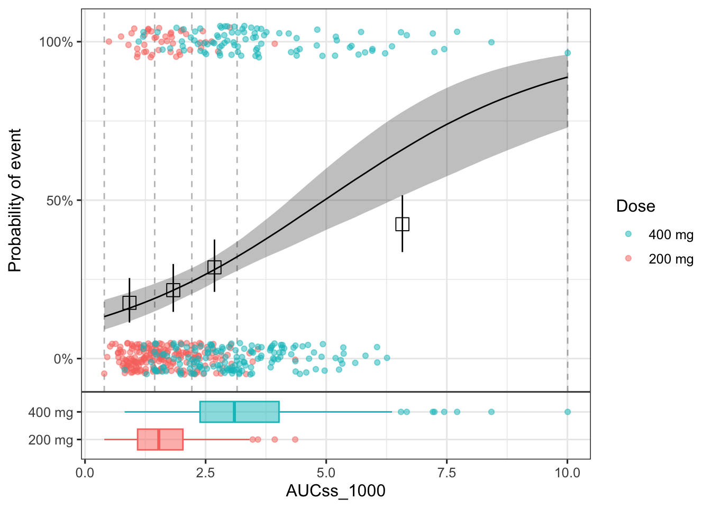
Use * instead of + to apply scales to all panels in the combined plot:
plot_er_gof(ermod_bin, var_group = "Dose", show_coef_exp = TRUE) *
xgxr::xgx_scale_x_log10(guide = guide_axis(minor.ticks = TRUE))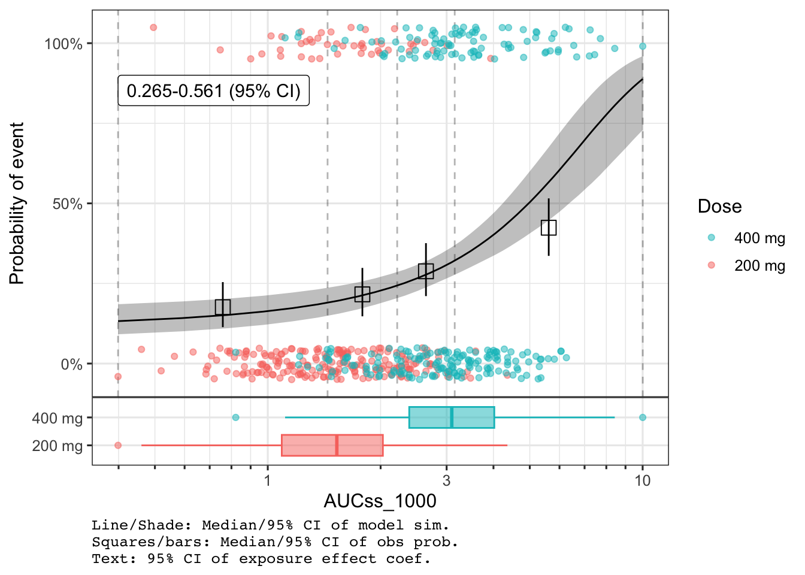
For deeper customization (titles, themes, colors, shapes), use return_components = TRUE to get modifiable ggplot objects, then recombine with combine_er_components().
# Get components
comps <- plot_er_gof(ermod_bin, var_group = "Dose", return_components = TRUE)
# Modify the main plot
comps$main <- comps$main +
labs(title = "Exposure-Response Analysis", x = "AUC (ng·h/mL / 1000)")
# Recombine
combine_er_components(comps)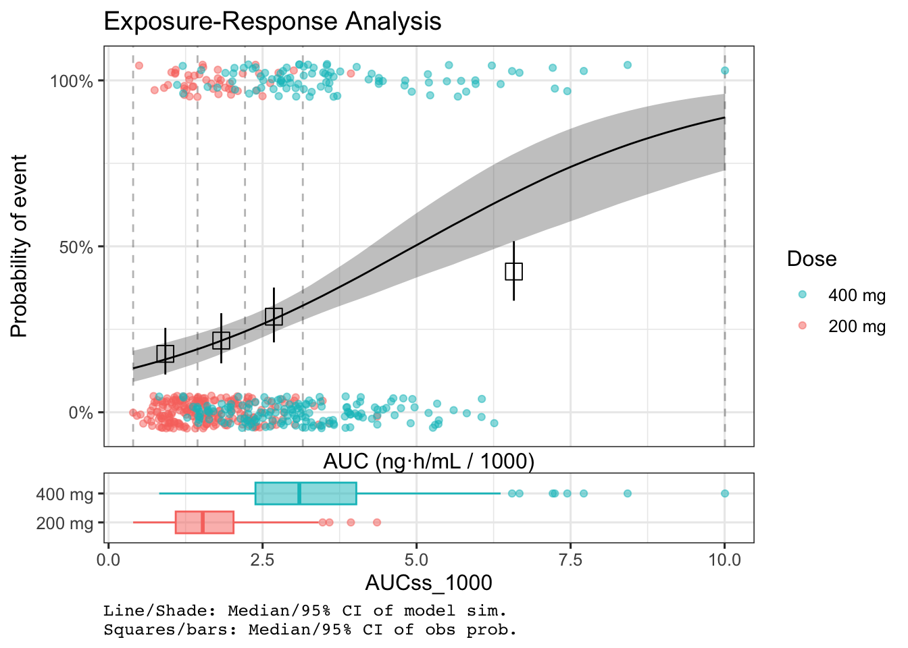
comps <- plot_er_gof(ermod_bin, var_group = "Dose", return_components = TRUE)
# Extract original data for custom point layer
origdata <- extract_data(ermod_bin) |>
mutate(Dose = glue::glue("{Dose_mg} mg"))
comps$main <- comps$main +
# Add points with custom shapes by dose
geom_jitter(
data = origdata,
aes(x = AUCss_1000, y = AEFLAG, color = Dose, shape = Dose),
width = 0, height = 0.05, alpha = 0.7
) +
scale_shape_manual(values = c(16, 17, 15)) +
scale_color_brewer(palette = "Set1", guide = guide_legend(reverse = TRUE)) +
labs(title = "Custom Theme with Shapes", color = "Dose", shape = "Dose") +
theme_minimal()Scale for colour is already present.
Adding another scale for colour, which will replace the existing scale.
comps$boxplot <- comps$boxplot +
scale_fill_brewer(palette = "Pastel1") +
scale_color_brewer(palette = "Set1") +
theme_minimal()
combine_er_components(comps)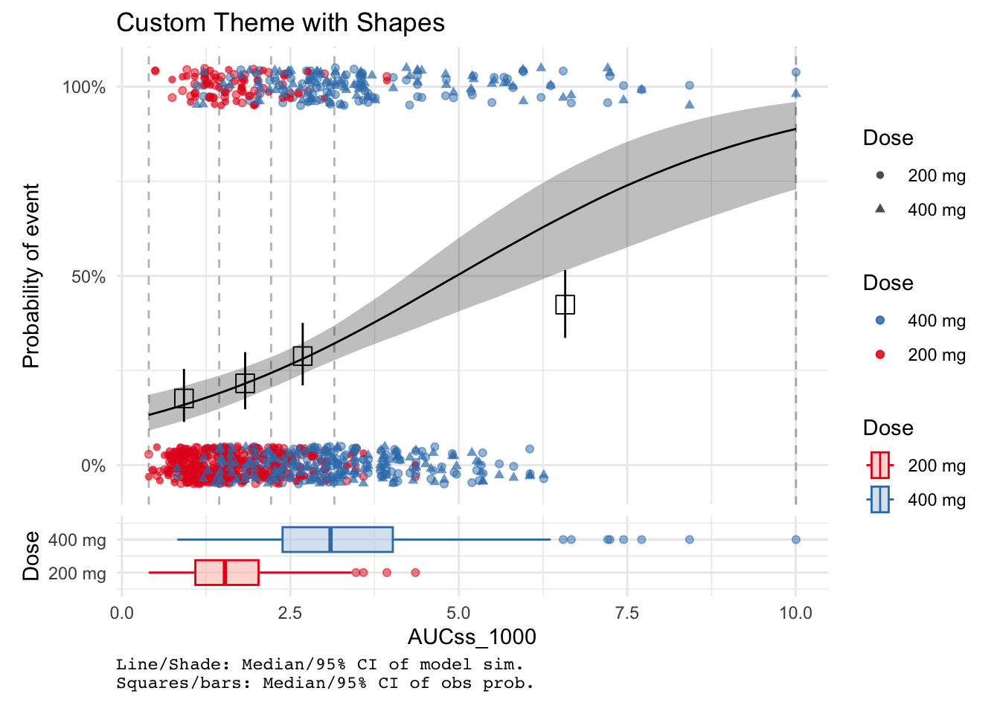
comps <- plot_er_gof(
ermod_bin,
var_group = "Dose",
show_caption = TRUE,
return_components = TRUE
)
comps$main <- comps$main + labs(title = "Adjusted Layout")
# Custom heights and suppress caption
combine_er_components(comps, heights = c(0.7, 0.3), add_caption = FALSE)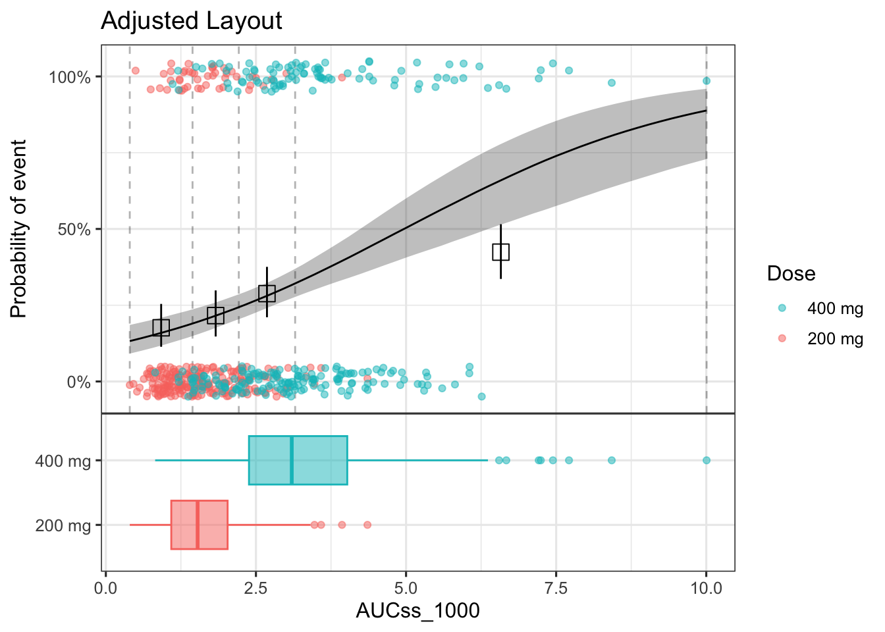
comps <- plot_er_gof(ermod_bin, var_group = "Dose", return_components = TRUE)
log_scale <- xgxr::xgx_scale_x_log10(guide = guide_axis(minor.ticks = TRUE))
comps$main <- comps$main + log_scale + labs(title = "Log Scale")
comps$boxplot <- comps$boxplot + log_scale
combine_er_components(comps)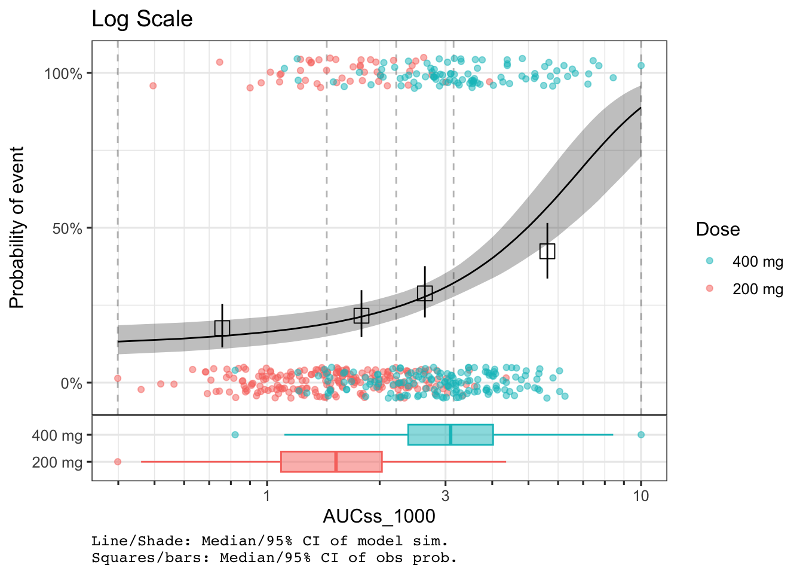
For complete documentation, see the plot_er_gof() reference.
plot_er_gof() options:
| Option | Description | Default |
|---|---|---|
var_group |
Group data by column | NULL |
add_boxplot |
Add exposure boxplot | TRUE if var_group set |
boxplot_height |
Relative height of boxplot | 0.15 |
show_boxplot_y_title |
Show boxplot y-axis title | FALSE |
n_bins |
Bins for observed probability | 4 |
qi_width_obs |
CI width for observed data | 0.95 |
qi_width_sim |
CI width for model curve | 0.95 |
show_coef_exp |
Show coefficient CI | FALSE |
coef_pos_x/y |
Coefficient label position | Auto |
coef_size |
Coefficient label size | 4 |
qi_width_coef |
CI width for coefficient | 0.95 |
show_caption |
Show plot caption | TRUE |
return_components |
Return components for customization | FALSE |
Tips:
* instead of + to apply scales to all panelsreturn_components = TRUE for titles, themes, colors, and shapes$main (ER plot), $boxplot, $captioncombine_er_components() to recombine after modification